Head of Product
Kylie Forcinito- Vision, strategy, portfolio roadmap
- Intake and quarterly planning
- Budget, vendors, IT capacity
- Team growth and coaching

Digital ExperienceWho we are, what we're building, and how to work with us. We're moving from project-by-project delivery to a product team that owns roadmaps and outcomes for every Varsity Spirit digital product.
Lead product-centric, value-driven digital initiatives that connect every customer touchpoint, revenue stream, and competitive advantage for Varsity Spirit.
The most innovative digital presence in youth activities: every athlete, family, and event in one seamless ecosystem.
By 2030, Digital is the strategic engine and innovation driver behind every major Varsity Spirit initiative.
One identity and a connected experience across every product.
Products athletes, families, coaches, and gym owners rely on.
Persistent roadmaps, measured outcomes, steady iteration.
Year one builds the foundation: a product operating model, our core products running well, and evidence for the next big bets.
Define product verticals, assign owners, start quarterly planning, and launch KPIs for every digital product.
One registration and identity layer across camps, competitions, apparel, and events, moving toward self-serve.
AI Enablement, VTV, One Varsity App, and Varsity.com POVs, plus 2–3 proofs of concept before committing investment.
Add PM and UX/design capability, and put data and analytics in place to measure KPIs.
One record per athlete and family, needed for personalization, loyalty, and cross-product analytics.
KPI tracking, A/B testing, and feature flags so decisions rest on data.
Product verticals, owners, quarterly planning, and OKRs.
A component library and standards for a consistent One Varsity experience.
More PM and engineering capacity before the Year 2 roadmap.
Governed collection of Spirit-owned student and athlete data.
Our products, grouped by how we invest in them. Each product has one product owner on the team.
Keep existing products running well and improving.
Annual-event waivers: ERMP integration, mobile-first experience, faster on-site check-in.
Owner: TBDYear-over-year event updates and support for CLI and PCL events.
Owner: TBDStable dev, staging, and production environments, plus new sales features.
Owner: TBDPlatform roadmaps and analytics, then reduce friction in product discovery and checkout.
Owner: TBDIn-flight fan voting experience.
Owner: TBDOngoing strategic support and partnership.
Owner: TBDRoadmap-driven, measured against KPIs.
Launch, then analytics, testing, and a prioritized roadmap toward fully self-serve registration.
Owner: TBDCustomer profile and portal launched with ERMP, expanding to apparel and retail.
Owner: TBDEnhanced digital fan experience: fan database, mobile app, website evolution.
Owner: TBDDiscovery in 2026, toward a new site and content strategy.
Owner: TBDPlatform discovery in 2026, building toward launch.
Owner: TBDPOV and recommendation, then personalized content and premium tiers.
Owner: TBDAI Enablement POV, AI in team workflows, and cross-platform analytics.
Owner: TBDNew capabilities, planned after the foundations are in place.
Back-office tools for gym owners and studios.
A privacy-first, verified community for athletes and families.
Cross-product rewards tied to one Varsity identity.
Two product pods aligned to our portfolio, with UX shared across both and committed IT and vendor engineers in each pod.
Any tool that shapes a customer outcome, directly or through a rep, belongs on Digital's roadmap, with IT as the infrastructure partner.
We do our best work when we're part of the conversation from the start, not after scope is set. Involve Digital during:
| Decision | Decides | Consulted | Informed |
|---|---|---|---|
| Quarterly outcome goals per product | Kylie | PMs, business stakeholders | Michael, partners |
| What's in the backlog and in what order | PM | Tech Lead, UX | Kylie, stakeholders |
| How it's built, estimates, tech approach | Tech Lead | IT, vendors, PM | Kylie |
| UX patterns and design standards | Helen | PMs, Tech Leads | Team |
| New request: accept, defer, decline | PM | Kylie for cross-product or large requests | Requester |
| Release go / no-go | Tech Lead + PM | UX, QA | Stakeholders |
| Priority or capacity conflicts between pods | Kylie | Both PMs | Michael if escalated |
| Cadence | Meeting | Who | Output |
|---|---|---|---|
| Quarterly | Product planning and roadmap review | Team + business stakeholders | Outcome goals per product, capacity agreements |
| Monthly | Business review | Kylie, PMs, Michael | Scorecard, wins, trade-offs |
| Every 2 weeks | Sprint planning + demo | Each pod; stakeholders welcome at demo | Committed sprint, working product shown |
| Weekly | Intake triage | Kylie, PMs | Decision on every new request |
| Weekly | Product sync | Whole team | Cross-pod dependencies, UX queue |
The same standard applies to in-house, IT, and vendor work.
| If you need… | Talk to |
|---|---|
| A new feature, change, or fix | Submit a request through our intake process |
| A product's roadmap or a request's status | That product's owner (see Products) |
| Technical questions, integrations, release timing | Aaron (Pod A) or Pranava (Pod B) |
| Design reviews, research, the design system | Helen |
| Cross-product priorities, partnerships, escalations | Kylie |